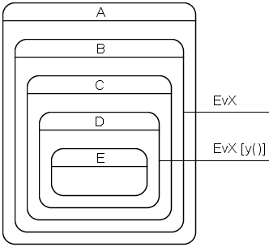

|
The boost::fsm library
Rationale
|
- Introduction
- Why yet another state machine framework?
- State-local storage
- Dynamic configurability
- Resource usage
- Determinism
- Error handling
- User actions: Member functions vs. function objects
- Memory management
- Double dispatch
Introduction
Most of the design decisions made during the development of this library are the result of the following requirements.
boost::fsm should ...
- be fully type-safe. Any type mismatches should be flagged with an error at compile-time.
- not require the use of a code generator. A lot of the existing FSM solutions force the developer to design the state machine either
graphically or in a specialized language. All or part of the code is then generated.
- allow for easy transformation of a UML statechart (defined in UML
specifications) into a working state machine. Vice versa, an existing C++ implementation of a state machine should be fairly trivial
to transform into a UML statechart. Specifically, the following state machine features should be supported:
- Entry-, exit- and transition-actions
- Guards
- Transitions between arbitrary states
- Hierarchical (composite, nested) states
- Orthogonal (concurrent) states
- Shallow/deep history
- produce a customizable reaction when a C++ exception is propagated from user code.
- support sequential and concurrent state machines and leave it to the
end-user which thread a concurrent state machine will run in.
- support the development of arbitrarily large and complex state machines. This means that multiple developers should be able to work on
the same state machine simultaneously.
- allow the user to customize all resource management so that the library could be used for applications with hard real-time
requirements.
- enforce as much as possible at compile time. Specifically, invalid state machines should not compile.
Why yet another state machine framework?
Before I started to develop this library I had a look at the following frameworks:
- The framework accompanying the book "Practical Statecharts in C/C++" by Miro Samek, CMP Books, ISBN: 1-57820-110-1
http://www.quantum-leaps.com
Fails to satisfy at least the requirements 1, 3, 4, 6, 8.
- The framework accompanying "Rhapsody in C++" by ILogix (a code generator solution)
http://www.ilogix.com/products/rhapsody/rhap_incplus.cfm
Fails to satisfy at least the requirements 2, 4, 5, 6, 8 (there is quite a bit of error checking before code generation, though).
- The framework accompanying the article "State Machine Design in C++"
http://www.cuj.com/articles/2000/0005/0005f/0005f.htm?topic=articles
Fails to satisfy at least the requirements 1, 3, 4, 5 (there is no direct threading support),
6, 8.
boost::fsm currently satisfies all requirements except for 3 (history not yet implemented) and 5 (support for threading not yet
implemented).
State-local storage
This not yet widely known state machine feature is enabled by the fact that every state in boost::fsm is represented by a class. Upon
state-entry, an object of the class is constructed and the object is later destructed when the state machine exits the state. Any data that
is useful only as long as the machine resides in the state can (and should) thus be a member of the state. This feature paired with the
ability to spread a state machine over several translation units makes it possible to have multiple developers simultaneously working on the
same state machine. Moreover, local changes to the machine layout no longer lead to recompilation of the whole machine.
In most existing FSM frameworks the whole state machine runs in one environment (context). That is, all resource handles and
variables local to the state machine are stored in one place (normally as members of the class that also derives from some state machine
base class). For large state machines this often leads to the class having a huge number of data members most of which are needed only
briefly in a tiny part of the machine. The state machine class therefore often becomes a change hotspot what leads to frequent
recompilations of the whole state machine.
Dynamic configurability
Two types of state machines
- A state machine framework supports dynamic configurability if and only if the whole layout (only states and transitions, actions are
still specified with normal C++ code) of a state machine can be defined at runtime. That is, data only available at runtime can be used
to build arbitrarily large and arbitrarily complex machines. See "A Multiple Substring Search Algorithm" by Moishe Halibard and Moshe Rubin in June 2002 issue of CUJ for a good example (unfortunately not available online). Such machines almost
always get away with a simple state model (no hierarchical states, no orthogonal states, no entry and exit actions, no history) because
the state machine layout is computed by an algorithm rather than designed by a human.
- On the other side are human-designed state machines, exploiting the standard features as necessary.
Naturally, the layout of such machines is known at compile time.
Why not use a dynamically configurable FSM library for all state machines?
One might argue that a dynamically configurable FSM framework is all one ever needs because any state machine can be implemented
with it. However, due to its nature such a framework has a number of disadvantages when used to implement static state machines:
- No compile-time optimizations and validations can be made. For example, boost::fsm determines the innermost common outer state (aka
LCA, least common ancestor) of the transition-source and destination state at compile time. Moreover, compile time checks ensure that the
state machine is valid (e.g. that there are no transitions between orthogonal states).
- Double dispatch must inevitably be implemented with some kind of a table. As argued below, this scales
badly.
- To warrant fast table lookup, states and events must be represented with an integer. To keep the table as small as possible, the
numbering should be continuous, e.g. if there are ten states, it's best to use the ids 0-9. To ensure continuity of ids, all states are
best defined in the same header file. The same applies for the events. Again, this does not scale.
- Because events carrying parameters are not represented by a type, some sort of a generic event with a property map must be used and
type-safety is enforced at runtime rather than at compile time.
It is for these reasons, that boost::fsm was built from ground up to not support dynamic configurability. However, this does not mean
that it's impossible to dynamically shape a machine implemented with this library. For example, guards can be used to make different
transitions depending on input only available at runtime. However, such layout changes will always be limited to what can be foreseen before
compilation. A somewhat related library, the boost::spirit parser framework, allows for roughly the same runtime configurability.
Resource usage
Even a complex state machine should typically not use more than a few hundred
bytes of memory (assuming empty event queues). Benchmarks with the BitMachine
example compiled with MSVC7.1 (single threaded), running on a mobile AMD Athlon XP 1800,
produced the
following results:
| Machine configuration |
2. Event dispatch & transition time [µs], customized memory
management |
3. Event dispatch & transition time [µs], normal memory
management |
| 2 states, 2 transitions (1 bit) |
1.0 |
1.8 |
| 4 states, 8 transitions (2 bits) |
1.3 |
2.1 |
| 8 states, 24 transitions (3 bits) |
1.5 |
2.3 |
| 16 states, 64 transitions (4 bits) |
1.8 |
2.5 |
| 32 states, 160 transitions (5 bits) |
2.0 |
2.8 |
BitMachine is not a particularly typical state machine so these
numbers give only rough guidance.
Interestingly, customization of memory management improved the times by only
30~45%. This might be different
on other platforms.
You don't pay for what you don't use
Almost:
- The current interface inevitably (I believe) causes the following slight overheads for supporting some features even if they are not used:
- State-local storage: A few more function calls are made (most of which will probably be optimized away).
- Orthogonal states: All non-leaf states (not only the orthogonal ones) need to store one more pointer and there is a very small increase in code size (one additional virtual function per executable). Bookkeeping is also slightly more complex.
I think this will have a negligible effects on
runtime performance (memory acquisition speed is largely independent of the size
of the requested blocks as long as the blocks are so small) and memory footprint
(the size of the executable will grow much faster with increasing state machine
complexity than the memory allocated at runtime).
- Moreover, the current implementation has potential for optimization:
- To exit any state (no matter whether
leaf or non-leaf) one virtual function call is needed. A better
implementation could make all of the non-leaf ones non-virtual. This overhead
may become significant for highly hierarchical machines.
- Several functions in the
state_machine
class template could be factored out into non-template base classes,
reducing code size.
Feature costs
- State-local storage: Obviously state size will be increased by whatever state-local members the user
adds.
- Hierarchical states: During event dispatch, the framework first tries to send the event to the innermost current state, if the
innermost state cannot consume it (because of a guard or because there is no
reaction for the event), the framework tries to send it to the
innermost states' immediate outer state. If the outer state cannot consume it either, it is sent to the immediate outer states’ outer
state and so on until an outermost state is reached. A chain of responsibility originating at the current innermost state is thus
formed.
The cost C (taking into account dynamic casts and virtual calls only) to dispatch one event can be formalized as follows:
C = (d + 1) dynamic_casts + (g + 2) virtual calls
where
d = the “level” of the state where the transition originates seen from the leaf state. d=0 for the leaf state.
g = the number of “failed” guards, g <= d
Examples:
- The leaf state consumes the event (always true for "flat" machines) -> d = 0, g = 0
- The immediate outer state of the leaf state consumes -> d = 1, g = 0 or 1
- Consider the following state configuration:

E is the current state and an event EvX is currently being processed. The guard y() prevents the transition originating at D ->
d=3, g=1
- Orthogonal states:
- Each orthogonal state object needs to store one additional pointer per
orthogonal region. Code size is increased slightly (a few additional
virtual functions per executable).
- As a state can now have an arbitrary number of orthogonal inner states, any number of innermost states can be current at a given
time. A tree rather than a chain of responsibility is thus formed. Event processing always starts with some leaf and works its way
up to the root, before it continues with the next leaf. Each visited leaf and node increases d and maybe g. The total
dispatch cost can be
calculated as outlined above.
- If there is more than one current leaf state before a transition, one additional virtual call for each exited state is made.
- Deferring and posting events: For performance reasons and because sequential state machines often
do not need to queue events, it is possible to operate such machines entirely
with stack-allocated events. However, as soon as events need to be
deferred and/or posted there is no way around queuing and allocation with
new. The
interface of simple_state::post_event enforces the use of
boost::intrusive_ptr at compile time. There is no way to do the same for
deferred events because allocation and deferral happen in completely unrelated
places. Of course, a "wrongly" allocated event could easily be transformed
into one allocated with new and pointed to by boost::intrusive_ptr with a virtual clone() function. However, in my experience,
event deferral is needed only very rarely in sequential state machines.
Moreover, fsm::concurrent_state_machine enforces the use of
boost::intrusive_ptr at compile time so most users won't run into this
limitation. I
therefore rejected the idea because of the attached code size overhead.
Determinism
For applications with hard real-time requirements it is crucial that no operation will take an indeterminable amount of time. The
following operations are potentially non-deterministic:
- Memory management. All heap memory operations (
operator new, operator delete, malloc, free,
etc.) are notoriously non-deterministic. As outlined below, boost::fsm allows for the customization of
all memory management.
dynamic_cast: Whether this operation is deterministic or not depends on your platform. On some it is, on others it is
not. However, I very much expect that compilers will use a deterministic implementation for real-time platforms.
If your compiler does not use a deterministic dynamic_cast implementation and you have hard
real-time requirements then boost::fsm is definitely not for you.
Error handling
There is not a single word about error handling in the UML state machine semantics specifications. Moreover, most existing
FSM solutions
also seem to ignore the issue.
Why an FSM library should support error handling
Consider the following state configuration:

Both states define entry actions (x() and y()). Whenever state A becomes
current, a call to x() will immediately be followed by a call to y(). y() could
depend on the side-effects of x(). Therefore, executing y() does not make sense
if x() fails. This is not an esoteric corner case but happens in every-day state
machines all the time. For example, x() could acquire memory the contents of
which is later modified by y(). There is a different but in terms of error handling equally critical situation
in the tutorial when Running::~Running accesses its outer state
Active. Had the entry action of Active failed and had Running been
entered anyway then Running's exit action would have invoked undefined behavior.
The error handling situation with outer and inner states resembles the one with
base and derived classes: If a base class constructor fails (by throwing an exception) the
construction is aborted, the derived class constructor is not called and the object never comes to life.
If an FSM framework does not account for failing actions, the user is forced to adopt cumbersome workarounds. For example, a failing
action would have to post an appropriate error event and set a global error variable to true. Every following action would first
have to check the
error variable before doing anything. After all actions have completed (by doing nothing!), the previously posted error event would
have to be
processed what would lead to the remedy action begin executed. Please note that it is not sufficient to simply push the error event into the
end of the queue as other events could still be pending. Instead, the error event has absolute priority and would have to be dealt with
immediately.
So, to be safe, programmers would have to encapsulate the code of every action in if ( !error ) { /* action */ }
blocks. Moreover, a try { /* action */ } catch ( ... ) { /* post error event */ error = true; } statement would
often have to be
added because called functions might throw and letting an exception propagate out of a user action would at best terminate the state machine immediately.
Writing all this
boiler-plate code is simply boring and quite unnecessary.
Error handling support in boost::fsm
- C++ exceptions are used for all error handling. Except from exit-actions (mapped to state-destructors and exceptions should never be
propagated from destructors), exceptions can be propagated from all user functions.
- A customizable per state machine policy specifies how to convert all exceptions propagated from user code. Out of the box, a
exception_thrown event
is generated.
- An exception event is always processed immediately and thus has absolute priority over any possibly pending events. The event queue
stays as it was until the exception event has been processed.
- The processing logic is as follows:
- Exception events resulting from failed
react functions are sent to the current state.
- Exception events resulting from failed entry actions are sent to the immediate outer state.
- Exception events resulting from failed transition actions are sent to the innermost common outer state.
In the last two cases the state-machine is not in a stable state when the
exception event is generated and leaving it there (e.g. by ignoring the
exception event) would violate an invariant of state machines. So, the exception event
reaction must either be a transition or a termination
to bring the machine back into a stable state. That’s why the framework checks that the state machine is stable after processing an
exception event. If this is not the case the state machine is terminated and the exception
is rethrown.
User actions: Member functions vs. function objects
With boost::fsm, all user-supplied functions (react functions, entry-, exit- and transition-actions) must be class members. The reasons for
this are as follows:
- The concept of state-local storage mandates that state-entry and state-exit actions (mapped to constructors and destructors) are
implemented as members.
react functions and transition actions often access state-local data. So, it is most natural to implement these functions as members of
the class the data of which the functions will operate on anyway.
Memory management
Out of the box, boost::fsm allocates all internal data on the normal
heap. This should be satisfactory for applications where all the following prerequisites are met:
- There are no deterministic reaction time (hard real-time) requirements.
- The machine will typically not process more than a few events per second. Of course, this figure depends on your platform. A typical
desktop PC could easily cope with thousands of events per second.
- The application will never run long enough for heap fragmentation to become a problem. This is of course an issue for all long running
programs not only the ones employing boost::fsm. However, it should be noted that with this library fragmentation problems could show up
earlier than with traditional FSM frameworks.
Should a system not meet any of these prerequisites customization of all memory management (not just boost::fsm's) should be
considered. This library supports this as follows:
- By passing a class offering a
std::allocator interface as the last state_machine class template parameter. The rebind
allocator member template is used
to customize memory allocation of the internal containers.
- By replacing the
simple_state, state and event class templates with ones that have a customized
operator new and operator delete. This can be as easy as inheriting your customized class templates from the framework-supplied class
templates and your preferred small-object/deterministic/constant-time allocator base class.
simple_state and state subclass objects are constructed and destructed only
by the state machine. It would therefore be possible to use the state_machine
allocator instead of forcing the user to overload operator new and operator
delete. However, a lot of
systems employ at most one instance of a particular state machine, which means
that a) there is at most one object of a particular state and b) this object is
always constructed, accessed and destructed by one and the same thread. We can
exploit these facts in a much simpler (and faster) new/delete
implementation (for example, see UniqueObject.hpp in the BitMachine example).
However, this is only possible as long as we have the freedom to overload memory management for
every single state class.
Double dispatch
At the heart of every state machine lies an implementation of double dispatch. This is due to the fact that the incoming event and
the current state define exactly which reaction the state machine will produce. Acyclic visitor was chosen for boost::fsm. The following alternatives were
considered but rejected for their bad scalability:
- GOF Visitor: The GOF Visitor pattern inevitably makes
the whole machine depend upon all events. That is, whenever a new event is added there is no way around recompiling the whole state
machine.
- Two-dimensional array of function pointers: To satisfy requirement 6, it should be possible to spread a single boost::fsm state
machine over several translation units. This however means, that the dispatch table must be filled at runtime and the different
translation units must somehow make themselves "known", so that their part of the state machine can be added to the table.
There simply is no way to do this automatically and portably. So, the only portable way that a state machine distributed over
several translation units could employ table-based double dispatch lies with the user. The programmer(s) would somehow have to manually
tie together the various pieces of the state machine. Not only does this scale badly but is also quite error-prone.
Revised
19 May, 2003
Copyright © 2003 Andreas Huber Dönni. All Rights Reserved.